L'objectif du programme est de simuler les mouvements planétaires au seins du système solaire. A partir de conditions initiales configurables, le logiciel calcule par approximations les positions successives de chaque planète en appliquant le principe fondamental de la dynamique.
La précision de ces calculs est limitée : pour fonctionner le programme doit considérer que l'accélération comme la vitesse sont constants durant de courts intervalles de temps Δt (périodes de calcul). Ces périodes de calcul augmentent avec la vitesse de simulation, provoquant une baisse de précision.
Le lancement du programme se fait soit en ouvrant bin/phys.exe (qui chargera les conditions initiales par défaut), soit en ouvrant :
Le programme calcule et renseigne "à la volée" pour chaque planète les informations suivantes (dans le référentiel choisi)
| Nom | Donnée | Formule |
| Masse | Masse de la planète (en kg) | (Donnée) |
| Distance | Distance avec l'origine du référentiel d'étude (en km) | 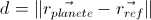 |
| Vitesse | Vitesse (en km/s) | 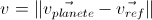 |
| Accel | Accélération (en mm/s2) | 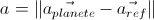 |
| Aph | Aphélie (distance maximale avec le référentiel) | 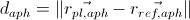 |
| Peri | Aphélie (distance minimale avec le référentiel) | 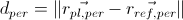 |
| Exc | Excentricité de l'orbite | 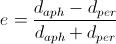 |
| Per | Période orbitale en années et jours terrestres | |
| Angle | Angle entre le plan du mouvement de la planète et de celui du référentiel (au sein du référentiel absolu). (Dans la formule ci-contre est utilisée la notation anglophone du produit vectoriel) |
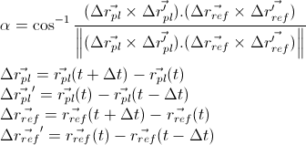 |
| Aire1 | Aire balayée par la planète (en km/j) | 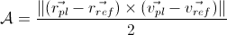 |
| Moment cin.1 | Moment cinétique (en kg.m²/s) | 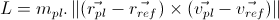 |
| Dist.moy | Distance moyenne avec le référentiel (en km), en considérant la trajectoire elliptique. | 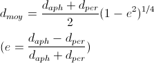 |
| Per(th) | Période théorique de l'orbite, dans l'hypothèse d'un moment cinétique constant. | 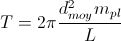 |
Les données suivies d'un "(?)" sont celles que le programme n'a pas fini de calculer ou qu'il n'a pas pu déterminer avec certitude. C'est le cas lorsque la planète étudiée n'a pas encore fait une orbite complète autour du soleil.
Il est important de noter que ces valeurs n'ont de sens que si la planète étudié est effectivement en orbite autour de la planète choisie en référentiel. Le programme ne pouvant pas s'assurer avec certitude que ce soit le cas, l'utilisateur doit lui même vérifier que le mouvement dans le référentiel d'étude est bien orbital (ce qui est évident lorsque l'on observe la trajectoire)
En plus des données chiffrées instantanées, le logiciel affiche les planètes du système solaire ainsi que leur trajectoire. Il peut également tracer les vecteurs des accélérations subies par chaque planète dans le référentiel sélectionné.
Le programme utilise, pour tous ses calculs, un "référentiel absolu". En revanche, l'affichage des trajectoires ou encore des informations diverses telles que la vitesse se fait dans le référentiel des planètes configurées (vous pouvez changer le référentiel à tout moment) mais pas dans le référentiel absolu (ce qui n'aurait pas beaucoup de sens).
Le programme calcule les trajectoires à partir des conditions initialies en appliquant le PFD avec la méthode d'Euler. La première étape consiste à calculer l'accélération subie par chaque planète par l'effet gravitationnel provoqué par l'ensemble des autres astres, à l'instant t :
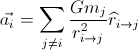, où 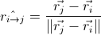
Puis le programme calcule la vitesse de l'astre à l'instant suivant (t+Δt), en considérant l'accélération constante durant le court intervalle de temps Δt (première approximation) :
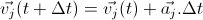
Une fois toutes les vitesses calculées le programme met à jour les vecteurs positions en réalisant la seconde approximation :
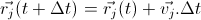
Le programme tente de détecter les situations de syzygie lors de la simulation, c'est-à-dire les transits astronomiques, éclipses, etc. qui pourraient avoir lieu entre la planète étudiée, le référentiel et toutes les autres planètes. Un message apparait lorsque qu'une telle situation est détectée et reste affiché pendant 1,5 seconde. Ces évènements sont conservés en mémoire et apparaissent dans le fichier XML en cas d'export.
La condition permettant de détecter une telle situation est :
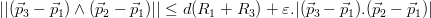
(Démonstration) (en cours de rédaction)
L'intégralité des commandes peut se faire au clavier. Quelques unes sont néanmoins accessibles par des boutons.
| Touche | Action associée |
| S | Lancer la simulation. |
| P | Mettre en pause la simulation. |
| Entrée | Changer la planète étudiée (celle dont les caractéristiques sont affichées en haut à droite). |
| Flèches | Effectuer des rotations de la vue. |
| 1 | Changer référentiel (précédent). |
| 2 | Changer référentiel (suivant). |
| A | Afficher/Cacher les vecteurs accélération. |
| T | Afficher/Cacher la trajectoire de la planète courante. |
| 0 (zéro) | Afficher/Cacher la trajectoire des anciennes orbites. |
| 4 | Doubler la vitesse de simulation. |
| 5 | Diviser par deux la vitesse de simulation. |
| 7 | Améliorer la précision de 10% |
| 8 | Diminuer la précision de 10% |
| F1 | Mémoriser davantage de positions (+20 %) |
| F2 | Mémoriser moins de positions (-20 %) |
| F3 | Afficher l'aire couverte par la planète étudiée par rapport au référentiel (en km²/j) |
| O (lettre) | Enregistrer la position courante des planètes dans un fichier texte. Dossier de destination : "positions". NB : il est préférable de mettre la simulation en pause avant l'enregistrement. |
| F4 (lettre) | Enregistrer la position courante des planètes ainsi que quelques unes de leurs caractéristiques dans un fichier XML. Dossier de destination : "positions". NB : il est préférable de mettre la simulation en pause avant l'enregistrement. |
| F12 | Enregistrer une capture d'écran au format BMP. Dossier de destination : "images". |
Lors de son ouverture, le programme tente d'ouvrir le fichier "planets.txt" du dossier "bin" (où se trouve l'exécutable). Ce fichier contient les informations nécessaires au fonctionnement de la simulation : masse et position des planètes, ainsi que leur vitesse instantanée initiale, et d'autres informations relatives à leur affichage (nom, couleur).
Le format d'un tel fichier est strict et doit être respecté impérativement. Le voici :
# jj/mm/aaaa hh:mm:ss NomPlanete1 masse rayon position_x position_y position_z vitesse_x vitesse_y vitesse_z rouge vert bleu NomPlanete2 masse rayon position_x position_y position_z vitesse_x vitesse_y vitesse_z rouge vert bleu etc..
NB : le rayon, dans la version actuelle du programme, est utilisé pour détecter les syzygies (éclipses, transits) et les collisions. Il n'est donc pas nécessaire de préciser sa valeur exacte. Cependant il est indispensable de fournir une valeur dans le fichier planètes (pour respecter le format). Il est recommandé d'utiliser "0" comme valeur dans ce cas.
Les positions sont exprimées en unités astronomiques. Les vitesses sont exprimées en unités astronomiques par jour. L'unité de la masse doit être le kg. Les "composantes" rouge, vert et bleu des couleurs représentatives de chaque planète doivent être un nombre compris entre 0 et 255. Exemple :
# 02/03/2012 23:00:00 Soleil 1.9891e30 0.00930494526 0 0 0 0 0 0 255 255 0 0 Mercure 3.302e23 1.63083872e-5 0.0430539113994 0.2705402097897 0.1400537055981 -0.0334988994278 0.0031881496948 0.0051761918131 240 240 100 Venus 4.8685e24 4.04537843e-5 -0.1515314552327 0.6373909900284 0.2963681263263 -0.0198399237191 -0.0044456307006 -0.0007447356439 100 0 0 Lune 7.3477e22 1.16138016e-5 -0.9461696749698 0.2743783605460 0.1188462210257 -0.0059860582285 -0.0151717439505 -0.0066252890706 200 200 200 Terre 5.9736e24 4.26352124e-5 -0.9459911362602 0.2719353384658 0.1178923523387 -0.0054172422096 -0.0151215922821 -0.0065548855384 10 100 200 Mars 6.4185e23 2.27021947e-5 -1.5920996017913 0.4242452800035 0.2375890262932 -0.0035433333583 -0.0111217032591 -0.0050055209561 220 80 50 Jupiter 1.8986e27 0.000477894502 3.4267387266367 3.3556939168495 1.3549166173071 -0.0055749459078 0.0050547894797 0.0023023589577 140 90 80 Saturne 5.6846e26 0.000402866696 -8.8208813937223 -3.8711845177836 -1.2190835243249 0.0020155183194 -0.0046651721770 -0.0020137217582 255 255 130 Uranus 8.6810e25 0.000170851362 20.0202390085409 1.4209078560921 0.3392081526902 -0.0003151495399 0.0034276359196 0.0015056974323 100 255 100 Netpune 1.0243e26 0.000165537115 26.1122553483927 -13.4307907723313 -6.1472702313096 0.0015199947804 0.0025640877004 0.0010117328082 100 100 255 Pluton 1.314e22 7.70732894e-6 4.1482234719797 -30.0944906660086 -10.6403298324741 0.0031670165928 0.0001613327787 -0.0009047366041 122 125 102
Par défaut le programme met à disposition la configuration donnée ci-dessus. Si vous souhaitez utiliser une autre configuration, vous êtes libre de modifier le fichier bin/planets.txt comme vous le souhaitez. Gardez à l'esprit cependant que rajouter des planètes (ex: des satellites) peut avoir des conséquences sur les performances. Le temps de calcul évolue avec le carré du nombre de planètes.
Vous pouvez trouver les coordonnées héliocentriques rectangulaires du système solaire à la date que vous désirez à l'adresse suivante : http://www.imcce.fr/fr/ephemerides/formulaire/form_ephepos.php.
Elles sont déjà exprimées en UA.
Il est également possible de remplacer le fichier planets.txt (une sauvegarde du fichier par défaut se trouve dans le dossier bin, sous le nom planets_sauvegarde.txt) par un enregistrement des positions effectué auparavant depuis le programme. Ces enregistrements sont déjà au bon format, il suffit d'en copier un sous le nom "planets.txt" depuis le dossier "positions" dans le dossier "bin".
Pour savoir comment effectuer un enregistrement, consultez le tableau "Commandes clavier".
NB : il est recommandé de faire coincider le référentiel absolu utilisé par le programme avec la position initiale de l'astre principal du système. Dans le cas du système solaire, cela revient à utiliser comme coordonnées (0,0,0) pour le soleil à l'instant initial. Par la suite le soleil se déplacera de façon quelconque dans ce référentiel "absolu", mais cela n'aura pas d'incidence sur les résultats affichés.
Pour lancer le programme en chargeant un fichier planètes particulier, il faut passer le nom du fichier en argument dans la commande (quoi doit être cohérent avec le répertoire de travail). Ex :
> cd bin > phys.exe saturne.txt